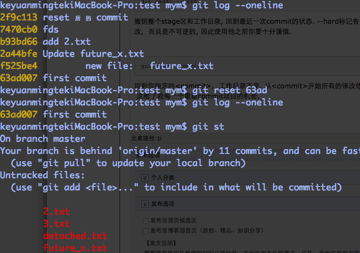
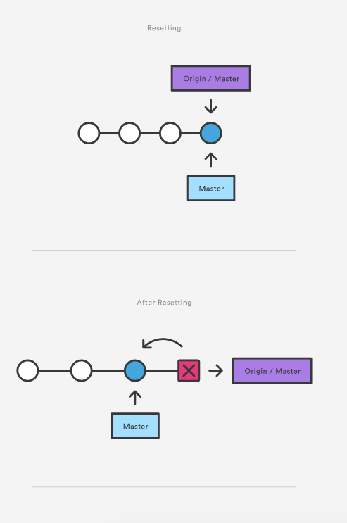
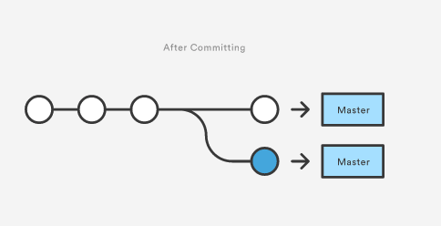

[译]git reset
git reset
如果说git revert是一个安全的撤销方式, 那么git reset就是一个非常危险的方法了. 当你使用git reset撤销的时候, 你没有可能在回到最初了-他是一个永久的不可撤销的undo. git reset时Git命令中唯一一个有可能丢失你工作的命令.
git reset可以用来删除已经commit了的快照, 但是他更多的是用来撤销在stage区和工作目录下的修改. git reset应该只用来撤销本地的修改-不应该使用reset撤销和其他开发者一起共享的commit.
用法
git reset <file>
从stage区删除指定的文件, 工作目录下不变. 这个unstage状态中的文件不会覆盖任何修改.
git reset
撤销整个stage区, 回到最近一个commit的状态, 工作目录下不变. unstage状态中所有文件不会覆盖任何修改, 给你一个从头开始re-build stage区的机会.
git reset --hard
撤销整个stage区和工作目录, 回到最近一次commit的状态. --hard标记告诉Git在工作目录下也要覆盖所有的修改. 他会撤销所有没有commit的修改, 而且是不可逆的, 因此使用他之前你要十分谨慎.
git reset <commit>
回到你指定的<commit>, 工作目录不变. 从<commit>开始所有的修改依然在你的工作目录当中, <commit>后的所有commit快照都被删除了, 这给了我每一个重新commit项目的机会.

git reset --hard <commit>
类似于git reset <commit>但是你的工作目录下面的文件也回到<commit>时的状态.
讨论
上面的命令都用来从仓储中撤销修改. 如果没有--hard标记, git reset是一个通过撤销stage区和commit快照来重新构建他们的一个好的方法. 当你正在项目中做的实验失败了你需要完全撤销的他们（包括本地工作目录）, 这个时候你可以使用--hard标记.
revert被设计用来安全的撤销公共的commit, git reset被设计用来撤销本地的修改. 因为他们的目的不同, 他们的实现也不同: reset完整的删除一个changeset. revert会保留最初的changeset, 通过新建一个commit来撤销.
不要reset一个公共的项目历史
如果<commit>后面的快照已经被push到公共仓储了, 那么你应该使用git reset <commit>. 当你发布了一个commit的时候, 你应该假设其他的开发者已经依赖, 使用了你这个commit里面的内容. 下面将演示如果你reset了一个公共commit将发生什么.


当你在reset之后创建了一个commit, Git会认为你本地的历史从origin/master中分离了.
要确保你的git reset <commit>只运用于你本地－－而不是已经push了的公共修改. 如果你需要fix一个公共的commit, 你应该使用revert.
例子
从缓存区删除一个文件
git reset经常被用来从缓存区删除一个文件. 下面的例子假设你有两个文件hello.py和main.py, 这两个文件已经被添加到了仓储.
# Edit both hello.py and main.py # Stage everything in the current directory git add . # Realize that the changes in hello.py and main.py # should be committed in different snapshots # Unstage main.py git reset main.py # Commit only hello.py git commit -m "Make some changes to hello.py" # Commit main.py in a separate snapshot git add main.py git commit -m "Edit main.py"
如你所见git reset让你的commit更加具有原子性, 把你下面commit不相关的修改先从缓存删除掉, 然后从缓存区把剩下的都是相关的修改commit掉.
删除本地commmit
下面的假设你正在本地做一些实验(都还是没有push的), 但是你决定放弃实验中做的所有修改, 完全的删除掉某个commit之后的快照.
# Create a new file called `foo.py` and add some code to it # Commit it to the project history git add foo.py git commit -m "Start developing a crazy feature" # Edit `foo.py` again and change some other tracked files, too # Commit another snapshot git commit -a -m "Continue my crazy feature" # Decide to scrap the feature and remove the associated commits git reset --hard HEAD~2
git reset HEAD~2移除掉从当前branch往后数的第二个commit的所有快照. 再次强调, reset <commit>只应该作用于没有push的commit.